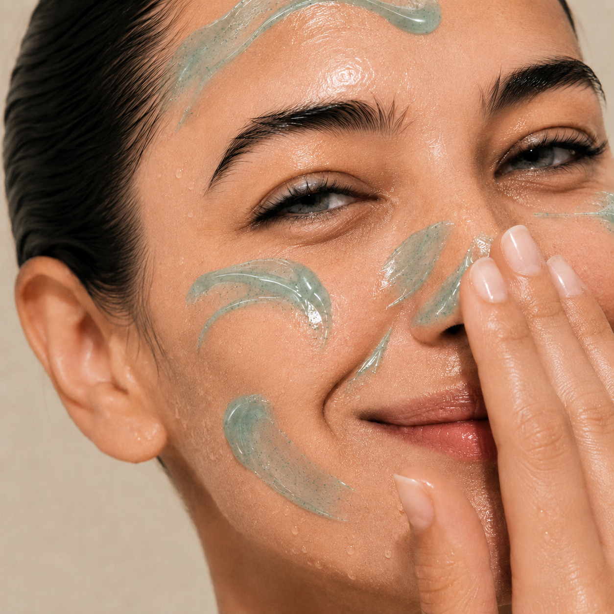
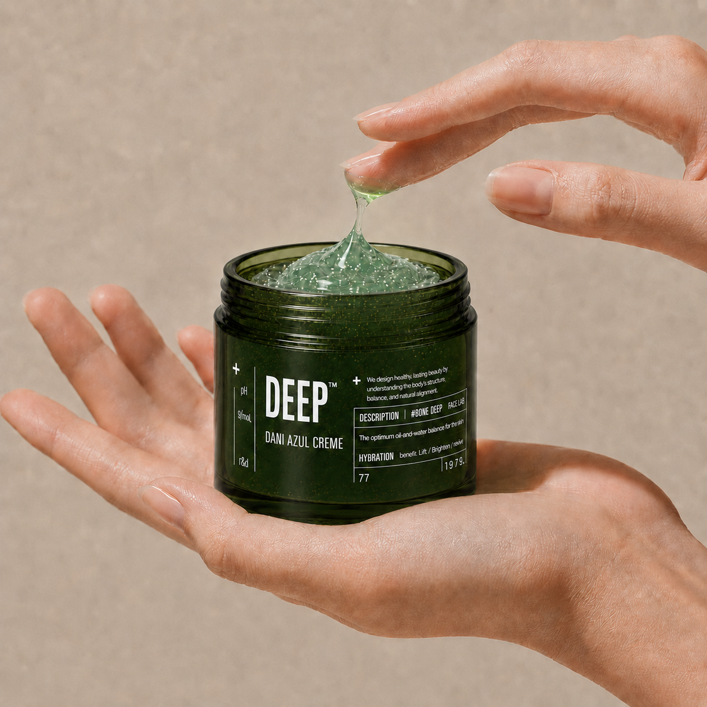
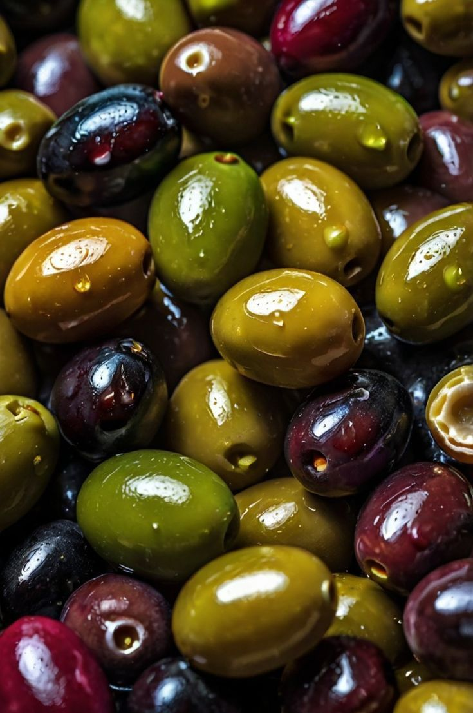
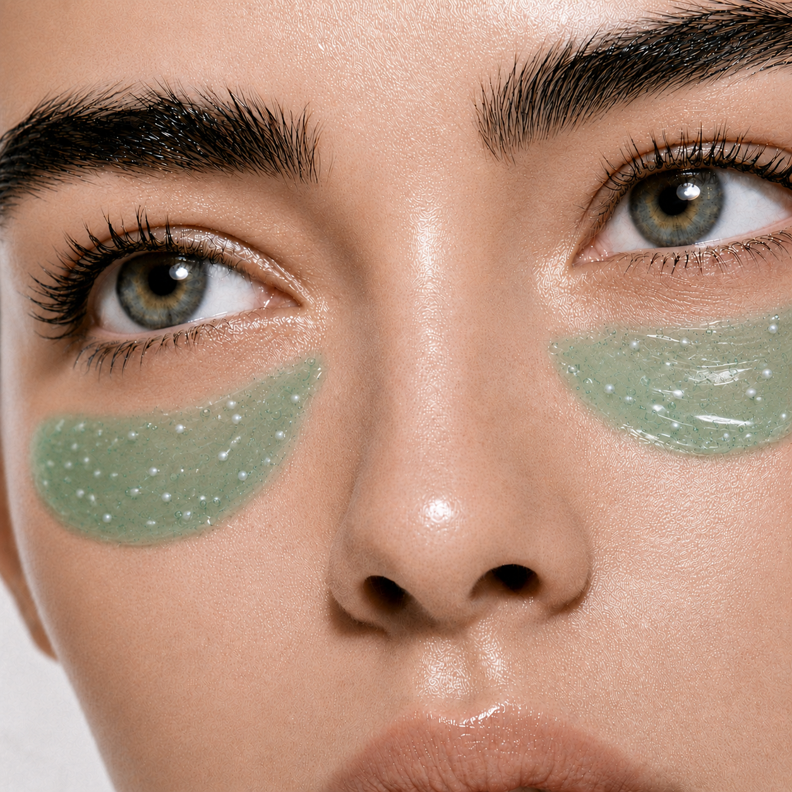
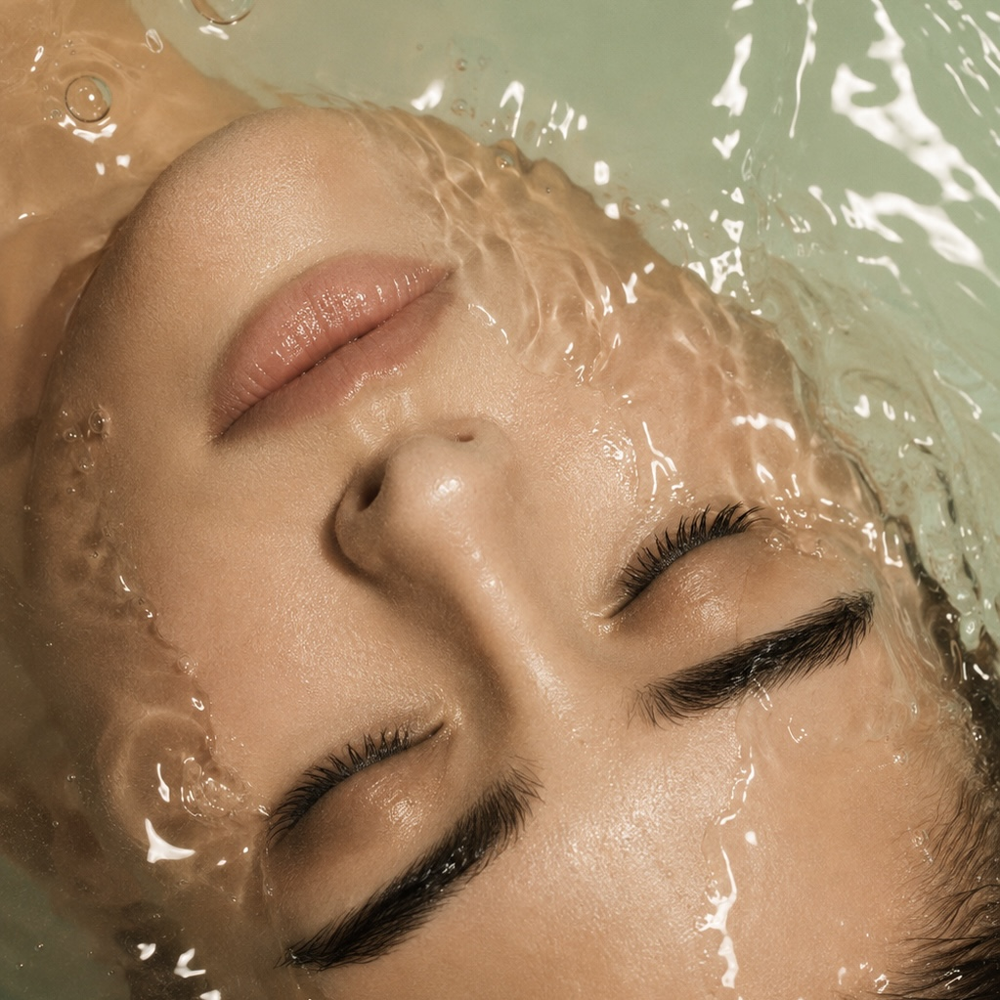
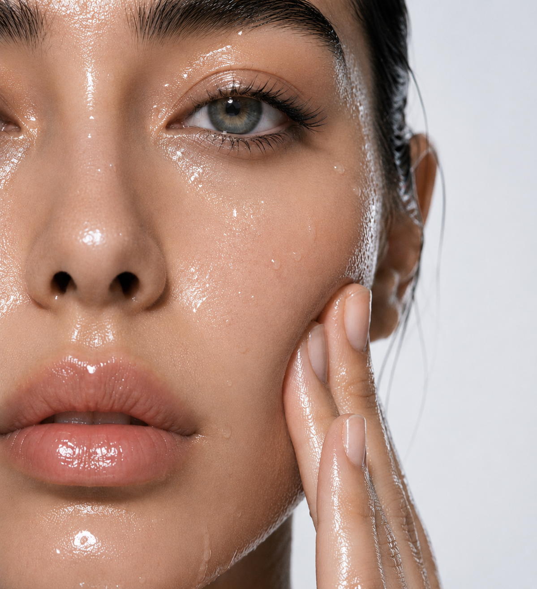

붓기는 내리고, 열감은 식히고, 예민해진 피부는 편안하게.
아줄렌과 다시마추출물, 올리브추출물, 센텔라를 담아 관리 직후 민감하고 열감이 느껴지는 피부를 빠르게 진정시키는 에스테틱 쿨링 리커버리 젤 크림입니다.
골기 관리나 디바이스 사용 후 피부는 일시적으로 열감이 느껴지거나 예민해질 수 있습니다. 피부가 건조하고 붓기까지 더해지면 얼굴선도 무겁고 둔해 보일 수 있습니다.
DEEP™ DANI는 아줄렌을 중심으로 한 진정 성분과 식물 유래 보습 성분, 히알루론산과 카페인을 결합해 관리 후 피부에 즉각적인 쿨링감과 풍부한 수분을 전달합니다. 단순히 피부를 진정시키는 젤 크림을 넘어, 붓기로 무거워 보이는 피부 인상과 얼굴선까지 함께 관리하는 에스테틱 리커버리 젤 크림입니다.


"열감은 시원하게, 피부는 편안하게, 붓기로 무거워 보이는 인상은 산뜻하게."
일반적인 진정 젤이 피부 열감과 수분 공급에 집중한다면, DEEP™ DANI는 카페인과 고탄성 젤 텍스처를 더해 붓기로 무거워 보이는 피부 인상까지 함께 관리합니다.
"단순한 진정을 넘어, 붓기로 무거워 보이는 얼굴선까지 산뜻하게."
아줄렌은 민감하고 불편해진 피부를 편안하게 관리하는 진정 성분입니다.
관리 직후 열감과 건조함으로 예민해진 피부에 촉촉한 편안함을 전달해 균형이 흐트러진 피부 컨디션을 건강하게 되돌려줍니다.
"관리로 지친 피부에 더하는 아줄 블루의 편안한 진정."
다시마추출물이 관리 후 건조하고 민감해진 피부에 풍부한 수분과 영양을 공급합니다.
피부를 부드럽고 유연하게 가꿔주며, 아줄렌과 함께 피부의 진정·보습 균형을 편안하게 관리합니다.
"바다에서 시작된 수분으로 피부 깊은 편안함을 채우다."
올리브추출물이 외부 자극과 건조함으로부터 피부를 편안하게 보호하고 피부에 수분과 유연함을 더합니다.
피부 장벽 컨디션을 촉촉하게 관리해 관리 후에도 편안하고 부드러운 피부결을 유지하도록 돕습니다.
"피부는 편안하게, 수분 장벽은 촉촉하게."


센텔라, 즉 병풀 유래 성분이 외부 자극으로 민감하고 붉어 보이는 피부를 편안하게 관리합니다.
아줄렌과 함께 피부 진정 시너지를 형성해 관리 직후 불안정해진 피부 컨디션을 촉촉하고 건강하게 가꿔줍니다.
"바르는 순간 시원하게, 관리 후 피부는 편안하게."
히알루론산이 건조하고 수분이 부족한 피부에 풍부한 보습감을 전달합니다.
고탄성 젤 텍스처와 함께 촉촉한 수분막을 형성해 관리 후 피부가 쉽게 당기거나 건조해지지 않도록 편안하게 감싸줍니다.
"시원함 뒤에 건조함이 남지 않도록, 수분은 촘촘하고 깊게."


카페인이 일시적인 붓기로 무겁고 둔해 보이는 피부 인상을 산뜻하게 관리합니다. 피부에 시원한 수분감을 제공하는 젤 텍스처와 함께 얼굴선을 매끄럽고 생기 있게 가꿔 관리 후 더욱 깨끗하고 정돈된 피부 인상을 완성합니다.
"무거워 보이는 피부 인상은 산뜻하게, 얼굴선은 매끄럽고 깨끗하게."